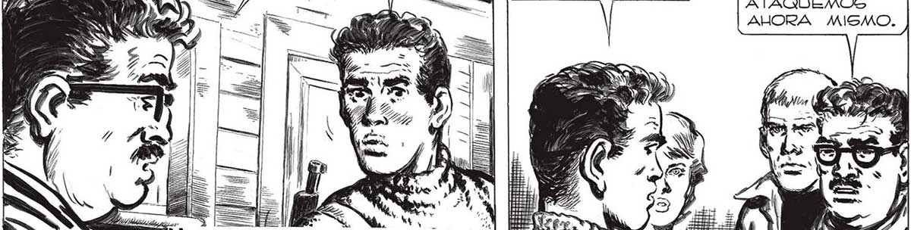
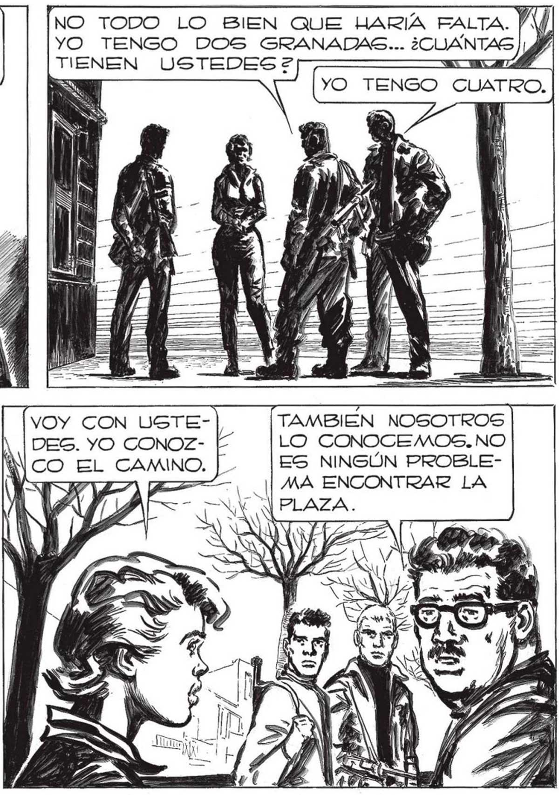

«DE LA NARIZ SE GOZABAN DEL CABELLO CASTANO EN EL GUE SE DETENÚAN LOS PRIMEROS RAYOS DEL GOL... COMPREND'LO QUE SENTIA EL TORNERO:LA VIDA, RESURGIENDO PUIANTE ENTRE TANTA MUER: TE, VOLVIA POR SUS FUEROS... So a QUE REPETIRLE LA PREGUNy TE .. FÁCIL IMAGINAR EN QUÉ PENSABA. cl COMO UNA PUNTADA AS N NI Xx E Ñ A m5 e NO LLEGO A DISPARAR UN SOLO TlRO... PERO COMO ENTRO” TAN FATIL A LA CUPULA., PIENSO QUE CON UNA GRANADA... ELENA... ELENA Y MARTITA... RE A VERLAS AL BGUNA VEZ 7 E EN EL PECUO. ¿VOLVEEN LD) MITA AU ... ARROJADA DESDE LEJOS SE LES PUEDE HACER UN DANO ENORME... USTEDES PARECEN BIEN ARMADOS... |BIEN. NO PERDAMOS TIEMPO Y ATAQUEMOS AHORA MISMO. (YO TENGO OTRAS CUATRO, SEÑOR. Pero ALLÍ ESTABA FAVALLI, EL LUCHADOR DE SIEMPRE. ¿CON QUÉ ARMAS LOS ATACO su HERMANO, SENORITA £ E, CON UN REVOLVER 538... ETA YO TENGO DOS GRANADAS... ¿CUANTAS NO TODO LO BIEN QUE HARÍA FALTA. y TIENEN USTEDES? p A TAMBIEN NOSOTROS LO CONOCEMOS. NO ES NINGÚN PROBLEVOY CON USTEDES. YO CONOZ> 7 CAMINO. 200

